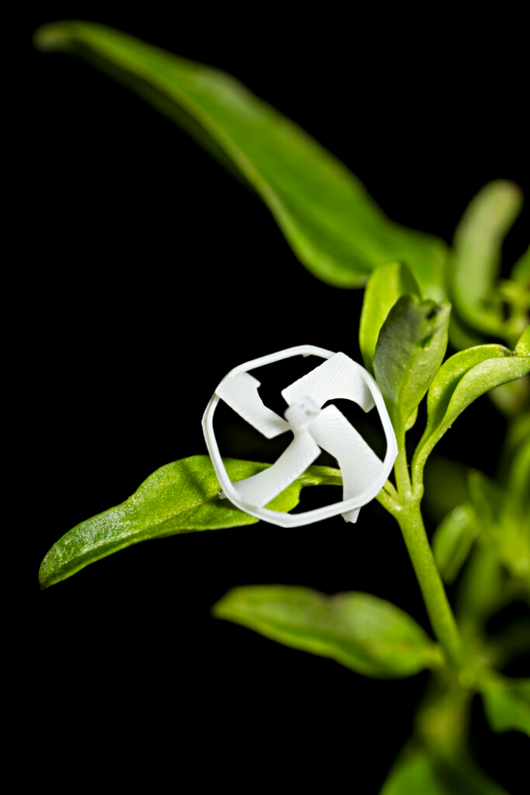

Science Advances
Untethered subcentimeter flying robots.
A wireless, magnetically powered aerial robot at the subcentimeter scale.
Explore paper
02 / PUBLICATIONS
A complete bibliography from my current CV, spanning microrobotics, smart materials, MEMS, sensors, and computational design.
BIBLIOGRAPHY / 37 WORKS
Showing 37 publications